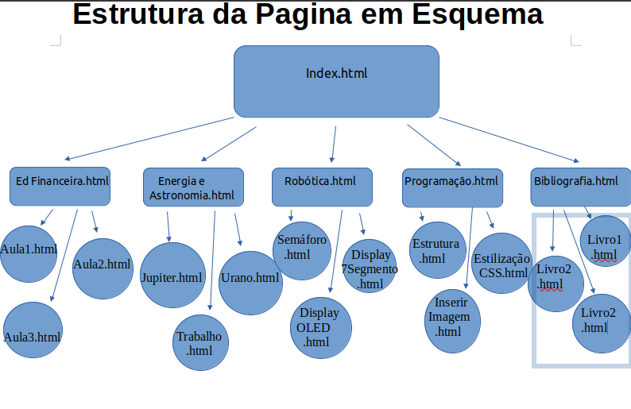

Matemática II - Programação II
Esquema Estrutura Página
Uma estrutura de site otimizada deve:
Agrupar conteúdos relacionados a um mesmo tópico
Organizar grupos em uma hierarquia lógica
Destacar as páginas mais importantes
A página Index.html é a pagina que abre seu site, logo teremos as página 2 que selecionam os conteúdos a serem acessados, as paginas 3 são as que são acessadas através das páginas 2 a assim por diante:
